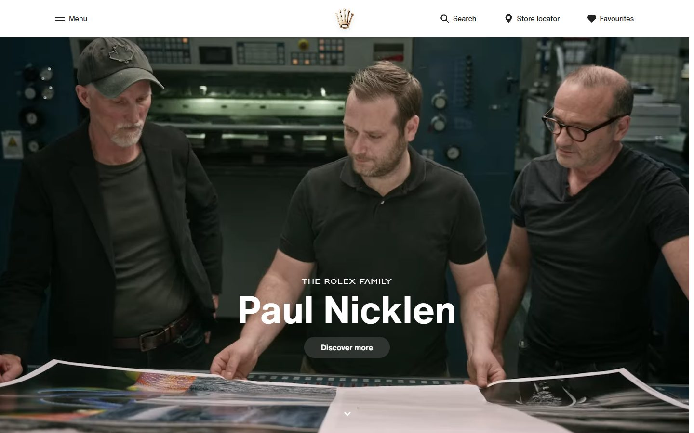
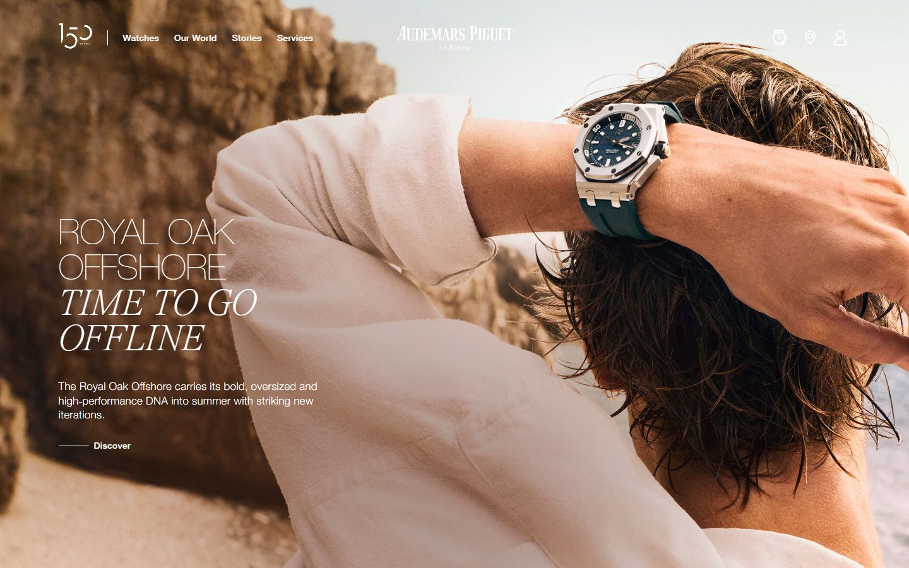
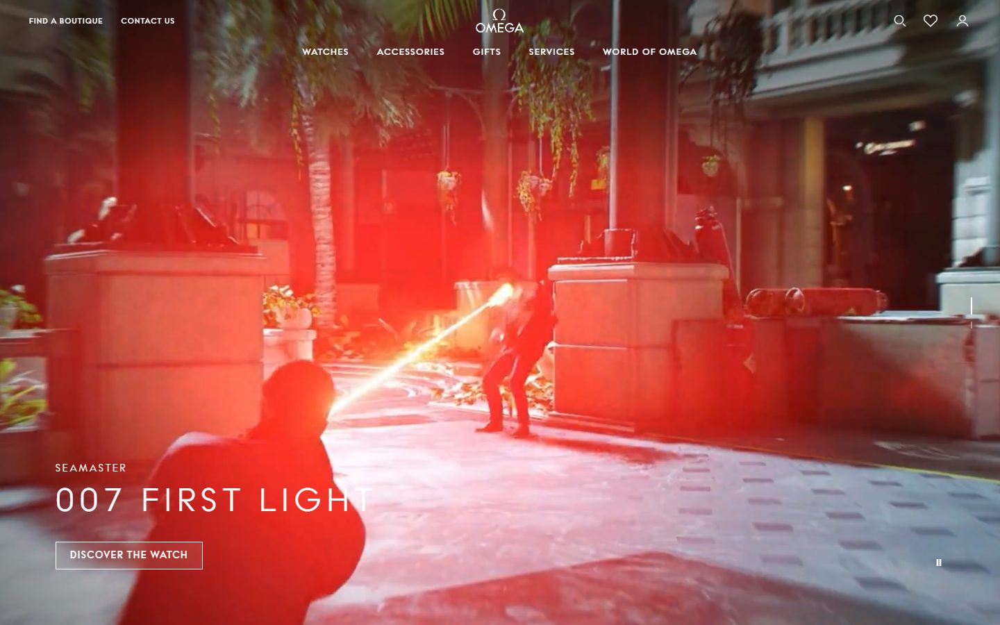
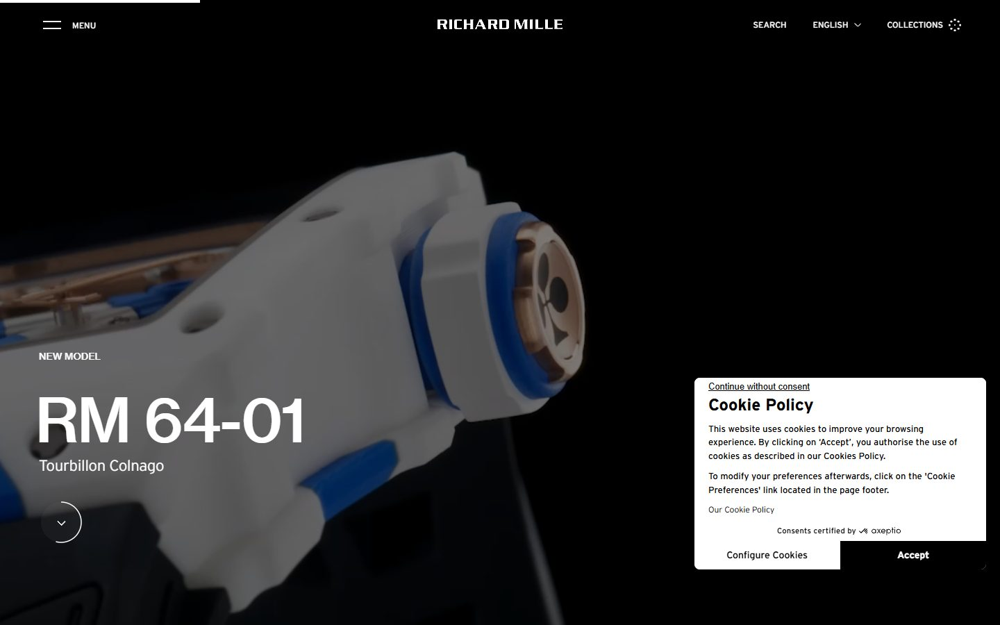
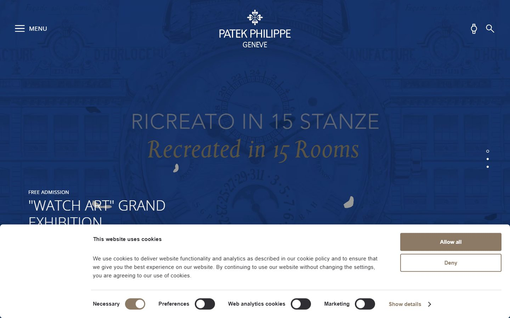
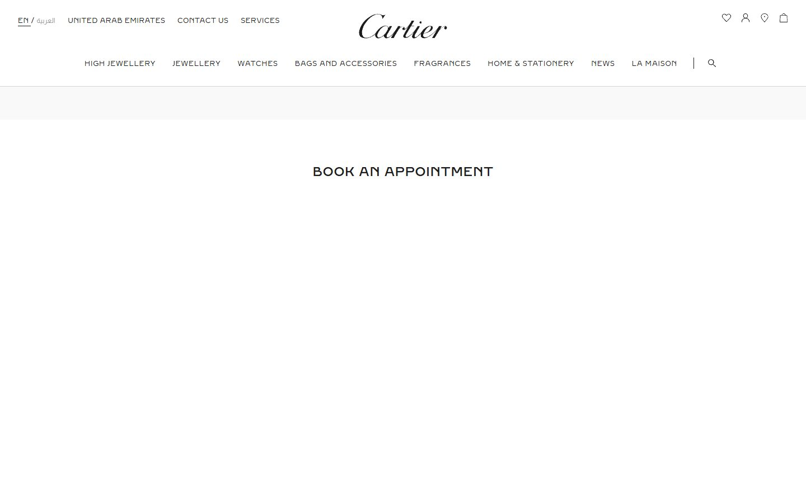
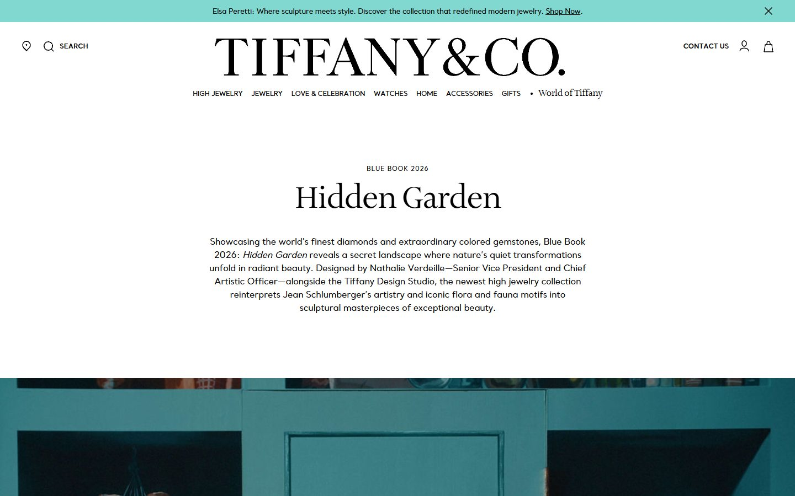
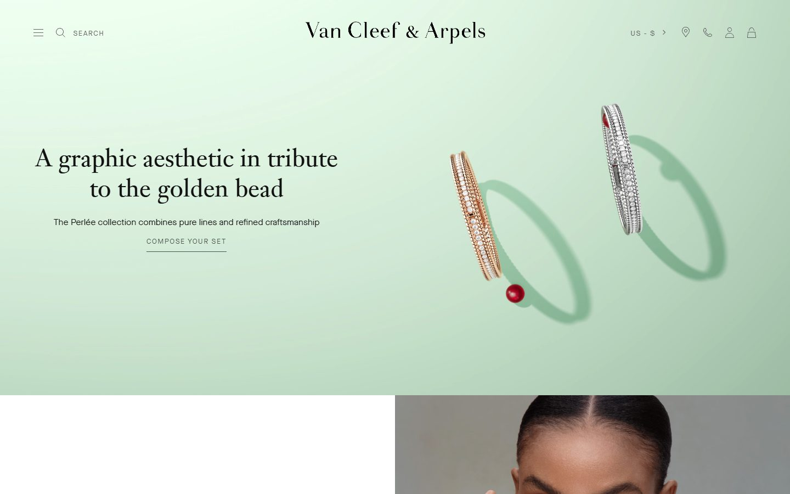
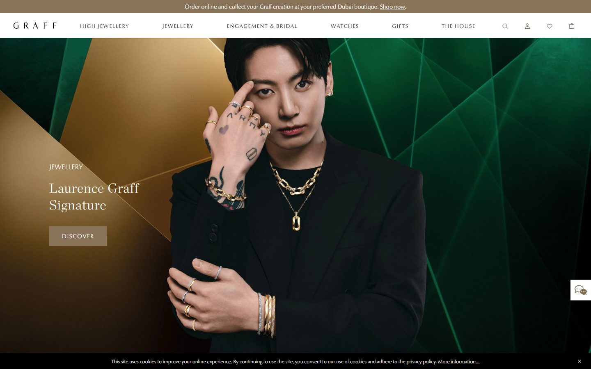

Тёмный кинематограф — часы фото-история или кинокадр во весь экран, крупный serif, одна кнопка

Rolex ЧАСЫ
Тёмный full-bleed кадр-история во весь экран, крупный белый serif, одна pill-кнопка «Discover».

Audemars Piguet ЧАСЫ
Тёплый lifestyle-кадр, часы на руке, заголовок serif снизу-слева. Живо, «носибельно».

Omega ЧАСЫ
Настоящий кинокадр (007), драматичный свет, крупный serif снизу. Максимально «фильм».
Тёмный продукт и heritage — часы объект в пустоте / глубокий музейный тон, инженерия и наследие

Richard Mille ЧАСЫ
Часы парят в тёмной пустоте, инженерный минимализм, почти без текста. Технологично и дорого.

Patek Philippe ЧАСЫ
Глубокий heritage-цвет, центрированный serif, музейный тон. Классика и вес традиции.

Cartier ДОМ
Белая галерейная типографика, тонкий serif-навбар, много воздуха, тон «бутик-консьерж».
Светлый и самоцветный editorial — ювелирка журнальный разворот, крупный вордмарк, украшение как объект искусства

Tiffany & Co. ЮВЕЛИРКА
Светлый editorial, огромный вордмарк, журнальная типографика, фирменный цветной акцент.

Van Cleef & Arpels ЮВЕЛИРКА
Светло-зелёный фон, тонкий serif, украшение-рендер парит в воздухе. Поэтично, деликатно.

Graff ЮВЕЛИРКА
Насыщенные самоцветные тона, портрет в украшениях, богатый high-jewelry-кадр.